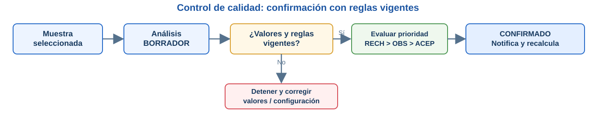
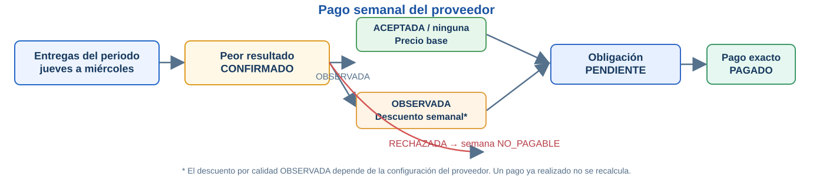

Condiciones que ordenan el acopio, el control de calidad, el pago a proveedores, la producción, las compras y las ventas. Se documentan conforme al comportamiento observado en los casos de uso del repositorio.
Fuente principalCasos de uso y reglas del código actual en GitHub.
RequirimientosRF y RNF de la matriz de trazabilidad proporcionada.
IdentificadoresLos códigos RN-AC, RN-CAL, etc. son identificadores documentales propuestos.
01Acopio y recorridos
ID
Regla
Condición y efecto real
RN-AC-01
Entrega válida
La cantidad debe ser mayor que cero; el proveedor debe estar activo y el acopiador habilitado para registrar.
RN-AC-02
Recorrido autorizado
La entrega desde una parada solo puede registrarla el acopiador responsable de un recorrido abierto. En el registro directo se comprueba la zona.
RN-AC-03
Efectos del registro
Al guardar la entrega se incorpora la leche al inventario y se genera o actualiza el pago pendiente. No se espera al análisis de calidad.
RN-AC-04
Parada sin entrega y duplicados
Si el proveedor no entrega, se marca «No entregó». Los reintentos de una entrega con la misma clave de idempotencia no deben duplicarla.
No se analiza obligatoriamente cada entrega. Calidad selecciona una muestra manualmente o mediante sorteo del servidor; una muestra no debe duplicarse.
RN-CAL-02
Registro preliminar
El OCR del ticket solo propone valores. El analista los revisa y guarda el análisis en BORRADOR; el resultado se determina al confirmar.
RN-CAL-03
Evaluación configurada
Cada valor registrado requiere una regla vigente. Si falta alguna, la confirmación se detiene. La prioridad de resultados es RECHAZADA, luego OBSERVADA y finalmente ACEPTADA.
RN-CAL-04
Resultado definitivo
El análisis CONFIRMADO no puede modificarse; se registra el resultado, se notifica al proveedor y se recalcula el pago pendiente sin alterar los ya pagados.

La falta de valores o reglas vigentes impide confirmar; una vez confirmado, el resultado queda inmutable.Ver evidencia en GitHub
Las entregas se agrupan para el pago semanal por proveedor, de jueves a miércoles.
RN-PAG-02
Resultado semanal
Se toma el peor resultado CONFIRMADO del periodo. Sin incidencias se usa el precio base; OBSERVADA puede descontar a toda la semana según configuración; RECHAZADA vuelve la semana NO_PAGABLE.
RN-PAG-03
Sin análisis de muestra
Una entrega sin análisis confirmado puede integrar el pago pendiente con el precio base, según el resto de resultados de la semana.
RN-PAG-04
Descuentos de planilla
La venta con DESCUENTO_PLANILLA solo corresponde a proveedores y no debe exceder su saldo estimado. En una semana no pagable, ese descuento se traslada a la siguiente semana pagable.
RN-PAG-05
Pago único y exacto
Solo se paga una obligación PENDIENTE, una vez, por su importe calculado completo. Un pago ya PAGADO no se recalcula ni permite abonos parciales.

La decisión usa el peor resultado confirmado del periodo y se aplica al pendiente, siempre que aún no esté pagado.Ver evidencia en GitHub
Para iniciar un lote deben existir recetas válidas e insumos suficientes. El consumo se descuenta al INICIAR la producción.
RN-PRO-02
Cierre por producción real
Al finalizar el lote se registra la cantidad efectivamente obtenida y la merma; recién entonces ingresan al stock los productos terminados.
RN-PRO-03
Anulación y reversión
Una entrega anulada revierte su ingreso de leche sin borrar el movimiento original. No se admite la reversión si la leche disponible ya fue consumida y el stock quedaría negativo.
Una venta requiere producto activo, precio vigente y stock suficiente. El sistema determina el precio según proveedor, mayorista o público.
RN-VEN-02
Venta al contado
Una venta CONTADO genera un ingreso de caja; una venta DESCUENTO_PLANILLA no ingresa dinero efectivo en ese momento.
RN-VEN-03
Salidas trazables
Los pagos efectivamente registrados a proveedores y trabajadores, así como las compras de insumos con importe, producen salidas vinculadas a sus operaciones.
El trabajador activo que deba controlar asistencia marca mediante QR dentro de la ventana diaria definida; ciertas operaciones requieren asistencia válida.
RN-PER-02
No duplicar ni ocultar faltas
Un segundo escaneo del día no crea otra asistencia. Si ya existe una FALTA, la corrección requiere intervención administrativa explícita.
La hoja «Matriz Requerimientos» sí contiene algunos RF de EcoLact. La relación siguiente es preliminar: permite localizar reglas respaldadas por esos RF, sin afirmar que el Excel ya esté trazado correctamente.
Requisitos del Excel
Reglas de esta página relacionadas
Observación
RF-01 · Autenticar usuario
RN-AC-01; reglas de autorización por rol
Coherente con el acceso protegido del backend.
RF-02 · Registrar proveedores y acopiadores
RN-AC-01 y RN-AC-02
Debe actualizarse el origen INT-01, actualmente referido a estudiantes.
RF-03 · Registrar sectores
RN-AC-02
La denominación del backend es zonas/rutas; «sectores» debe revisarse.
RF-04 y RF-05 · Entregas y recolección
RN-AC-01 a RN-AC-04
El código contiene recorridos, acopio e identificación de proveedores.
RF-07 y RF-08 · Análisis y notificación
RN-CAL-01 a RN-CAL-04
Se confirma por muestreo; el proveedor recibe una notificación del resultado.
RF-09 · Consultar historial
Relacionada con la consulta de entregas y resultados
Se documentará en «Flujos», no como regla aislada.
RF-10 y RF-11 · Reuniones y su asistencia
Sin correspondencia directa
No equivalen a comunicados ni al control de asistencia QR de trabajadores.
Producción, compras, ventas, caja y pagos
RN-PAG, RN-PRO, RN-INS, RN-VEN, RN-PER
La matriz todavía necesita nuevos RF para cubrir estas funciones existentes.
Conclusión
EcoLact no funciona mediante reglas aisladas. Una entrega activa inventario y pago pendiente; la calidad modifica el cálculo semanal cuando se confirma; la producción consume insumos y registra resultados reales; y los movimientos de caja se originan en operaciones confirmadas. Por eso se documentan primero las condiciones del negocio y se deja el procedimiento paso a paso para la sección Flujos.